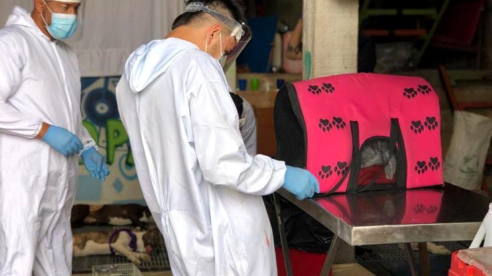

Mas de 28.000 esterilizaciones gratuitas a animales se han adelantado en 2020

En lo corrido de 2020, el Instituto de Protección Animal ha logrado esterilizar a más de 28.300 perros y gatos de la ciudad. Este procedimiento trae múltiples beneficios para los animales como la prevención de infecciones uterinas en las hembras, reducción de los tumores mamarios, entre otros.
Durante los meses de cuarentena por cuenta de la emergencia del COVID-19 se han esterilizado 5.493 animales, bajo estrictos protocolos de bioseguridad y en jornadas que han sido coordinadas con ayuda de ciudadanos para cubrir a aquellos animales sin un cuidador responsable, comunitarios o rescatados por organizaciones.
La meta del Instituto de Protección Animal (Idpyba) para los próximos cuatro años es esterilizar a 356.000 perros y gatos que lo necesiten.
A pesar de que las actividades de esterilizaciones gratuitas fueron suspendidas en abril y mayo debido a la contingencia por COVID-19, se realizaron 171 jornadas que permitieron alcanzar las cifras actuales.
Luego de la reactivación del programa de esterilizaciones, los miembros del Idpyba recorren las localidades de la ciudad para continuar reduciendo la natalidad de animales vulnerables de manera ética.

Mascota 1
Descripción de la mascota que se quiere adopatar y que aparece al comienzo. Es una descrición breve que ayuda con detalles importantes del animal
Mascota 2
Descripción de la mascota que se quiere adopatar y que aparece al comienzo. Es una descrición breve que ayuda con detalles importantes del animal
Mascota 3
Descripción de la mascota que se quiere adopatar y que aparece al comienzo. Es una descrición breve que ayuda con detalles importantes del animal